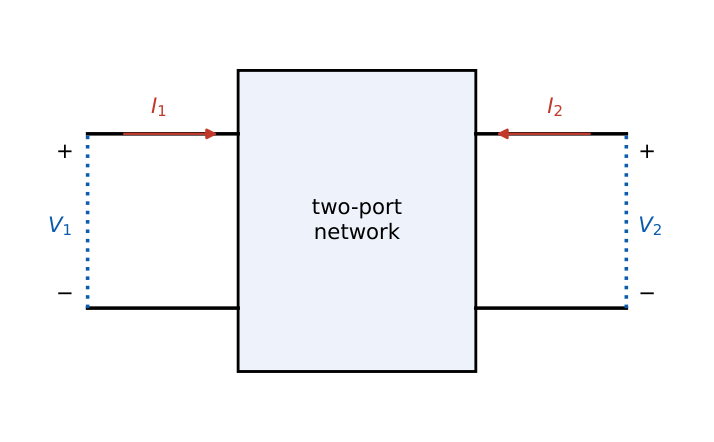
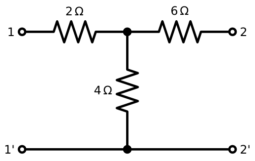
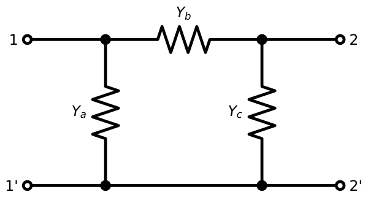
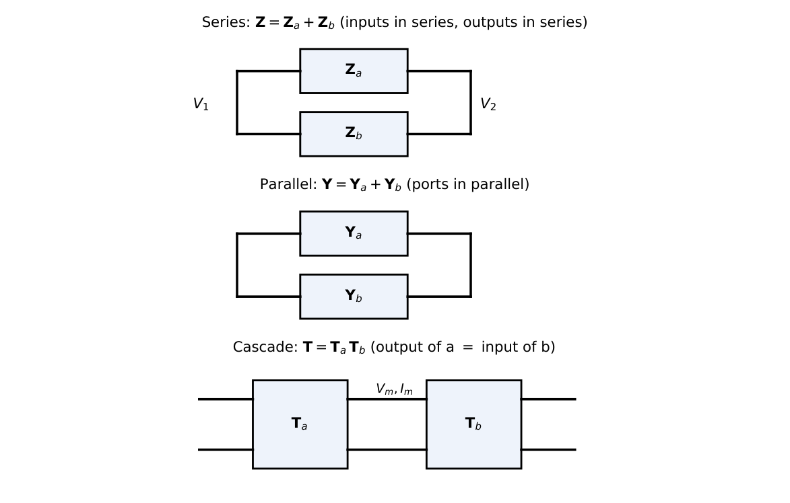
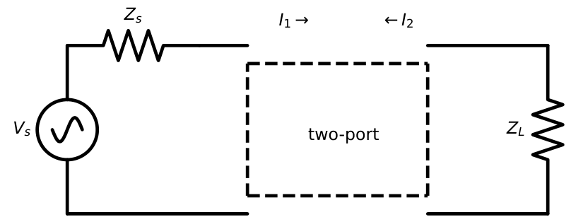

Two-Port Networks
In this chapter
- 13.1 Definition of two-port networks
- 13.2 Port variables
- 13.3 \(z\)-parameters (open-circuit impedance)
- 13.4 \(y\)-parameters (short-circuit admittance)
- 13.5 \(h\)-parameters (hybrid)
- 13.6 \(g\)-parameters (inverse hybrid)
- 13.7 Transmission (ABCD) parameters
- 13.8 Parameter determination: open-circuit and short-circuit tests
- 13.9 Standard networks and worked results
- 13.10 Conversion between parameters
- 13.11 Reciprocity conditions
- 13.12 Symmetry conditions
- 13.13 Interconnection of two-port networks
- 13.14 Terminated two-port networks
Compute \(z,y,h,ABCD\) for a given network; convert between parameter sets; reciprocity/symmetry conditions; cascade/series/parallel connections; terminated two-port (\(Z_{in}\), gain). Almost every year has one 2-mark two-port problem.
13.1 Definition of two-port networks
A two-port is a network with two pairs of terminals (ports): the current entering one terminal of a port equals the current leaving the other (the port condition). It is described by a relation between the four port variables \(V_1,I_1,V_2,I_2\) with no independent sources inside (or their effect excluded).
13.2 Port variables
Standard reference: \(I_1\) and \(I_2\) both flow into the network at the top terminals; \(V_1,V_2\) are the port voltages (\(+\) at the top). Two of the four variables are independent; the other two are expressed through them.

13.3 \(z\)-parameters (open-circuit impedance)
\[\begin{bmatrix}V_1\\V_2\end{bmatrix}=\begin{bmatrix}z_{11}&z_{12}\\z_{21}&z_{22}\end{bmatrix}\begin{bmatrix}I_1\\I_2\end{bmatrix},\quad z_{11}=\frac{V_1}{I_1}\Big|_{I_2=0},\ z_{12}=\frac{V_1}{I_2}\Big|_{I_1=0},\ z_{21}=\frac{V_2}{I_1}\Big|_{I_2=0},\ z_{22}=\frac{V_2}{I_2}\Big|_{I_1=0}.\]
13.4 \(y\)-parameters (short-circuit admittance)
\[\begin{bmatrix}I_1\\I_2\end{bmatrix}=\begin{bmatrix}y_{11}&y_{12}\\y_{21}&y_{22}\end{bmatrix}\begin{bmatrix}V_1\\V_2\end{bmatrix},\quad y_{11}=\frac{I_1}{V_1}\Big|_{V_2=0},\ y_{12}=\frac{I_1}{V_2}\Big|_{V_1=0},\ y_{21}=\frac{I_2}{V_1}\Big|_{V_2=0},\ y_{22}=\frac{I_2}{V_2}\Big|_{V_1=0}.\] \(\mathbf Y=\mathbf Z^{-1}\) when both exist.
13.5 \(h\)-parameters (hybrid)
\[\begin{bmatrix}V_1\\I_2\end{bmatrix}=\begin{bmatrix}h_{11}&h_{12}\\h_{21}&h_{22}\end{bmatrix}\begin{bmatrix}I_1\\V_2\end{bmatrix},\quad h_{11}=\frac{V_1}{I_1}\Big|_{V_2=0},\ h_{12}=\frac{V_1}{V_2}\Big|_{I_1=0},\ h_{21}=\frac{I_2}{I_1}\Big|_{V_2=0},\ h_{22}=\frac{I_2}{V_2}\Big|_{I_1=0}.\] Used for transistor small-signal models: \(h_{ie},h_{re},h_{fe},h_{oe}\).
13.6 \(g\)-parameters (inverse hybrid)
\(\begin{bmatrix}I_1\\V_2\end{bmatrix}=\begin{bmatrix}g_{11}&g_{12}\\g_{21}&g_{22}\end{bmatrix}\begin{bmatrix}V_1\\I_2\end{bmatrix}\); \(\mathbf G=\mathbf H^{-1}\).
13.7 Transmission (ABCD) parameters
\[\begin{bmatrix}V_1\\I_1\end{bmatrix}=\begin{bmatrix}A&B\\C&D\end{bmatrix}\begin{bmatrix}V_2\\-I_2\end{bmatrix},\quad A=\frac{V_1}{V_2}\Big|_{I_2=0},\ B=\frac{V_1}{-I_2}\Big|_{V_2=0},\ C=\frac{I_1}{V_2}\Big|_{I_2=0},\ D=\frac{I_1}{-I_2}\Big|_{V_2=0}.\] Note the minus sign: \(-I_2\) is the current flowing out of port 2 toward the load.
13.8 Parameter determination: open-circuit and short-circuit tests
| Parameter set | Test conditions | Measured |
|---|---|---|
| \(z\) | open port 2, then port 1 | \(z_{11},z_{21}\); \(z_{22},z_{12}\) |
| \(y\) | short port 2, then port 1 | \(y_{11},y_{21}\); \(y_{22},y_{12}\) |
| \(h\) | short port 2 (\(h_{11},h_{21}\)); open port 1 (\(h_{12},h_{22}\)) | |
| \(ABCD\) | open port 2 (\(A,C\)); short port 2 (\(B,D\)) |
13.9 Standard networks and worked results


\(z_{11}=R_a+R_b=6\), \(z_{12}=z_{21}=R_b=4\), \(z_{22}=R_c+R_b=10\ \Omega\), \(\Delta z=60-16=44\).
\(\mathbf Y=\mathbf Z^{-1}=\dfrac1{44}\begin{bmatrix}10&-4\\-4&6\end{bmatrix}\). \(A=\dfrac{z_{11}}{z_{21}}=1.5\), \(B=\dfrac{\Delta z}{z_{21}}=11\ \Omega\), \(C=\dfrac1{z_{21}}=0.25\) S, \(D=\dfrac{z_{22}}{z_{21}}=2.5\); \(AD-BC=3.75-2.75=1\) ✓ (reciprocal).
\(h_{11}=\dfrac{\Delta z}{z_{22}}=4.4\ \Omega\), \(h_{12}=\dfrac{z_{12}}{z_{22}}=0.4\), \(h_{21}=-\dfrac{z_{21}}{z_{22}}=-0.4\), \(h_{22}=\dfrac1{z_{22}}=0.1\) S.
\(y_{11}=Y_a+Y_b=0.75\) S, \(y_{12}=y_{21}=-Y_b=-0.25\) S, \(y_{22}=Y_b+Y_c=0.5\) S.
Series impedance \(Z\): \(ABCD=\begin{bmatrix}1&Z\\0&1\end{bmatrix}\). Shunt admittance \(Y\): \(\begin{bmatrix}1&0\\Y&1\end{bmatrix}\). Ideal transformer \(1{:}n\): \(\begin{bmatrix}1/n&0\\0&n\end{bmatrix}\). Ideal gyrator \(r\): \(\mathbf Z=\begin{bmatrix}0&-r\\r&0\end{bmatrix}\) (non-reciprocal).
13.10 Conversion between parameters
With \(\Delta_z=z_{11}z_{22}-z_{12}z_{21}\), \(\Delta_y=y_{11}y_{22}-y_{12}y_{21}\), \(\Delta_T=AD-BC\):
1.5
| \(z_{11}\) | \(z_{12}\) | \(z_{21}\) | \(z_{22}\) | |
|---|---|---|---|---|
| from \(y\) | \(y_{22}/\Delta_y\) | \(-y_{12}/\Delta_y\) | \(-y_{21}/\Delta_y\) | \(y_{11}/\Delta_y\) |
| from \(ABCD\) | \(A/C\) | \(\Delta_T/C\) | \(1/C\) | \(D/C\) |
| from \(h\) | \(\Delta_h/h_{22}\) | \(h_{12}/h_{22}\) | \(-h_{21}/h_{22}\) | \(1/h_{22}\) |
| \(A\) | \(B\) | \(C\) | \(D\) | |
| from \(z\) | \(z_{11}/z_{21}\) | \(\Delta_z/z_{21}\) | \(1/z_{21}\) | \(z_{22}/z_{21}\) |
| from \(y\) | \(-y_{22}/y_{21}\) | \(-1/y_{21}\) | \(-\Delta_y/y_{21}\) | \(-y_{11}/y_{21}\) |
13.11 Reciprocity conditions
| Parameters | \(z\) | \(y\) | \(ABCD\) | \(h\) / \(g\) |
|---|---|---|---|---|
| Reciprocal if | \(z_{12}=z_{21}\) | \(y_{12}=y_{21}\) | \(AD-BC=1\) | \(h_{12}=-h_{21}\) / \(g_{12}=-g_{21}\) |
| Symmetrical if | \(z_{11}=z_{22}\) | \(y_{11}=y_{22}\) | \(A=D\) | \(\Delta_h=1\) |
13.12 Symmetry conditions
Symmetrical means the two ports are interchangeable (a symmetric network is always reciprocal, not conversely). A reciprocal network needs three independent parameters; a symmetric reciprocal network needs two.
13.13 Interconnection of two-port networks

- Series–series: \(\mathbf Z=\mathbf Z_a+\mathbf Z_b\). Parallel–parallel: \(\mathbf Y=\mathbf Y_a+\mathbf Y_b\).
- Cascade: \(\mathbf T=\mathbf T_a\mathbf T_b\) (in signal-flow order, matrix multiplication is not commutative).
- Series–parallel: \(\mathbf H=\mathbf H_a+\mathbf H_b\). Parallel–series: \(\mathbf G=\mathbf G_a+\mathbf G_b\).
Series/parallel additions are valid only if the port condition remains valid after connection (Brune’s test); otherwise use \(ABCD\) cascades.
A series \(2\ \Omega\) followed by a shunt \(0.5\) S: \(\mathbf T=\begin{bmatrix}1&2\\0&1\end{bmatrix}\begin{bmatrix}1&0\\0.5&1\end{bmatrix}=\begin{bmatrix}2&2\\0.5&1\end{bmatrix}\), \(\Delta_T=2-1=1\).
13.14 Terminated two-port networks
With source impedance \(Z_s\) and load \(Z_L\) (\(V_2=-I_2Z_L\)):
\(Z_{in}=\dfrac{AZ_L+B}{CZ_L+D}\), \(\dfrac{V_2}{V_1}=\dfrac{Z_L}{AZ_L+B}\), \(\dfrac{I_2}{I_1}=\dfrac{-1}{CZ_L+D}\), \(Z_{out}=\dfrac{DZ_s+B}{CZ_s+A}\).
In \(z\) terms: \(Z_{in}=z_{11}-\dfrac{z_{12}z_{21}}{z_{22}+Z_L}\).

For \(\mathbf T=\begin{bmatrix}2&2\\0.5&1\end{bmatrix}\) and \(Z_L=2\ \Omega\): \(Z_{in}=\dfrac{2\cdot2+2}{0.5\cdot2+1}=3\ \Omega\), \(\dfrac{V_2}{V_1}=\dfrac{2}{4+2}=\dfrac13\). Direct check: the shunt \(0.5\) S (\(2\ \Omega\)) \(\parallel\) load \(2\ \Omega\) \(=1\ \Omega\); \(Z_{in}=2+1=3\ \Omega\); \(V_2/V_1=1/3\). ✓
Q1. A two-port is reciprocal. Then (A) \(z_{11}=z_{22}\) (B) \(z_{12}=z_{21}\) (C) \(AD-BC=0\) (D) \(h_{12}=h_{21}\).
Q2. The ABCD matrix of a series impedance \(Z\) is (A) \(\begin{bmatrix}1&0\\Z&1\end{bmatrix}\) (B) \(\begin{bmatrix}1&Z\\0&1\end{bmatrix}\) (C) \(\begin{bmatrix}Z&0\\0&1/Z\end{bmatrix}\) (D) \(\begin{bmatrix}0&Z\\1/Z&0\end{bmatrix}\).
Q3. Two two-ports are connected in cascade. The overall parameter matrix is the (A) sum of \(z\) (B) sum of \(y\) (C) product of \(ABCD\) (D) product of \(h\).
Answers: Q1 (B). Q2 (B). Q3 (C).
Q4. For the T network with \(\mathbf Z=\begin{bmatrix}6&4\\4&10\end{bmatrix}\Omega\), the parameter \(h_{21}\) is (A) \(0.4\) (B) \(-0.4\) (C) \(-0.6\) (D) \(2.5\).
Q5. A two-port has \(\mathbf T=\begin{bmatrix}2&2\\0.5&1\end{bmatrix}\) and is terminated by \(2\ \Omega\). The input impedance is (A) \(2\ \Omega\) (B) \(3\ \Omega\) (C) \(4\ \Omega\) (D) \(6\ \Omega\).
Answers: Q4 (B): \(-z_{21}/z_{22}=-4/10\). Q5 (B).
Q6. For the \(\Pi\) network (\(Y_a=0.5\), \(Y_b=0.25\), \(Y_c=0.25\) S), \(y_{11}=\) S.
Q7. Cascade of a series \(4\ \Omega\) followed by a shunt \(0.25\) S: parameter \(A=\) .
Answers: Q6: \(Y_a+Y_b=0.75\). Q7: \(\begin{bmatrix}1&4\\0&1\end{bmatrix}\begin{bmatrix}1&0\\0.25&1\end{bmatrix}=\begin{bmatrix}2&4\\0.25&1\end{bmatrix}\), \(A=2\).
Q8. A two-port with \(\mathbf Z=\begin{bmatrix}6&4\\4&10\end{bmatrix}\) is: (A) reciprocal (B) symmetrical (C) has \(\Delta_T=1\) (D) has \(y_{12}=y_{21}\).
Answers: Q8: (A), (C), (D). Not symmetrical since \(z_{11}\ne z_{22}\).
(i) Sign of \(-I_2\) in ABCD. (ii) Multiplying ABCD in the wrong order. (iii) Adding \(z\)-matrices of two-ports whose common-terminal condition is violated. (iv) Confusing reciprocity (\(z_{12}=z_{21}\)) and symmetry (\(z_{11}=z_{22}\)). (v) Using \(Z_{in}=z_{11}\) for a terminated network.
T1. \(\mathbf Y=\begin{bmatrix}2&-1\\-1&2\end{bmatrix}\) S. Find \(\mathbf Z\).
T2. Find \(\mathbf T\) of a shunt \(Y\) followed by a series \(Z\).
Answers: T1: \(\det=3\), \(\mathbf Z=\frac13\begin{bmatrix}2&1\\1&2\end{bmatrix}\). T2: \(\begin{bmatrix}1&0\\Y&1\end{bmatrix}\begin{bmatrix}1&Z\\0&1\end{bmatrix}=\begin{bmatrix}1&Z\\Y&1+YZ\end{bmatrix}\).
- \(z\): open-circuit; \(y\): short-circuit; \(h\): \(V_2=0\) / \(I_1=0\); \(ABCD\): \(V_1=AV_2-BI_2\), \(I_1=CV_2-DI_2\).
- \(\mathbf Y=\mathbf Z^{-1}\); \(A=z_{11}/z_{21}\), \(B=\Delta_z/z_{21}\), \(C=1/z_{21}\), \(D=z_{22}/z_{21}\).
- Reciprocal: \(z_{12}=z_{21}\), \(y_{12}=y_{21}\), \(AD-BC=1\), \(h_{12}=-h_{21}\). Symmetric: \(z_{11}=z_{22}\), \(A=D\).
- Series: \(Z\) add; parallel: \(Y\) add; cascade: \(ABCD\) multiply in order.
- \(Z_{in}=(AZ_L+B)/(CZ_L+D)\); \(V_2/V_1=Z_L/(AZ_L+B)\).